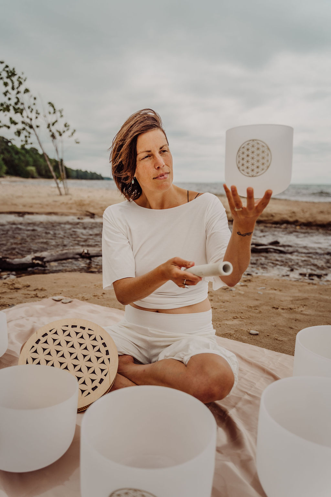

Reiki and Healing Sound
at Waterside Wellness

Meet the practitioner
Rebecca Rankin
Upon graduating from the University of Michigan with a degree in architecture, Rebecca moved to San Francisco to pursue a career in the design field. It was 2003 in San Francisco where she found a passion for all things wellness and began transforming her life of design into a life of healing and helping others.
In 2006, Rebecca completed her 500 Hour Ghosh Lineage Yoga teacher training. She continued her yogic studies over the years and is an ERYT-500 registered yoga teacher. She has taught yoga throughout the United States, Europe, and Central America leading retreats and co-leading yoga teacher trainings.
As Rebecca began to expand her studies, she was also drawn to other holistic practices to support and optimize health and well-being. She began to explore Reiki and Sound healing as complementary modalities, as well as Holistic Health Coaching.
With a thirst for knowledge, Rebecca is trained and certified in Sound Healing with teacher, Rakai'el Webb. And she studied Reiki with Jackie Carson and Vicki Kibby to become a certified Reiki Master. You can experience her monthly Sound Journeys in Northern Michigan, as well as 1:1 Reiki & Sound Healing Sessions.
When a health 'wake-up call' had Rebecca looking for more answers to improve her own health, she expanded her focus to Women's Wellness and became a certified Women's Holistic Hormone Health Coach. She facilitates Women's Circles and works 1:1 with clients to create action plans for hormonal well-being. She has created Cyclical Living courses, and has her own podcast - The Women's Moon Wisdom Podcast. She knew it was necessary to create tools where women can apply the wisdom of their cycles to regulate their experiences in their bodyMind and feel supported along the way.
When Rebecca isn't doing all things Wellness, you can find her playing out in nature with husband and her two little ones.